2026-10-17 · 状态：已批准；命令行 agent_access.py
第一期已实现（2026-10-17），SKILL.md、README.md、references/
已在 2026-10-19 随 v0.1
打包（skills/agent-access/，装法见Skills
配置指南），应用个人令牌仍在第二期（见第 11 节） · 依赖：Agent 接入设计
v3（接口约定 agent-access-v1，见第 12 节）
1. 目标
Agent 的创建者和操作者，在 Claude Code、Codex、Kiro CLI 里用自然语言完成一整轮：建 Agent → 发布 → 签发调用密钥 → 在应用里启用 → 测试 → 改了再测。页面只用来查看和兜底。
2. 两个 Skill，各管一边

| nexus-ai-operator（已有） | agent-access（新） | |
|---|---|---|
| 管哪边 | Nexus 平台 | 实现了 agent- 的应用，比如九安
PoC |
| 做什么 | 建、改、发布 Agent；方案 B 上线后还能签发调用密钥 | 把用户的 Nexus 身份连接到应用；列出发布；启用、停用；调用测试；看调用记录 |
| 用什么凭证 | 用户的 Nexus API 密钥（每个编码工具单独一把） | 应用的登录凭证：现在是应用口令，以后是应用个人令牌（afp_） |
| 凭证存在哪 | 编码工具所在的电脑：~/ |
编码工具所在的电脑：~/ |
为什么分成两个：
- 两边是不同的系统，凭证互不相干。
- 两个 Skill 可以由两个团队各自维护。
agent-access只认接口约定，不认九安。以后别的应用只要实现了agent-access-v1，用同一个 Skill 就能操作。
3. 安装与兼容
和 nexus-ai-operator 一样：把整个文件夹放进编码工具的技能目录，重启一次编码工具。
| 编码工具 | 个人目录（对所有项目生效） | 项目目录（只对这个项目生效） |
|---|---|---|
| Claude Code | ~/ |
<项目>/ |
| Codex | ~/（较早的版本是
~/） |
<项目>/ |
| Kiro CLI | ~/ |
<项目>/ |
- 运行环境：只需要 Python 3.9 及以上，不装任何依赖。
- 不支持 Skills 的工具：把
SKILL.md当作说明交给它，它照着运行脚本就行。 - 登录时报上工具名：登录时带
--client claude_code | codex | kiro | other，应用的留痕里会记下这次操作来自哪个工具。
4. 目录结构
agent-access/
SKILL.md 给编码工具读：什么时候用、命令、确认规则、安全底线、怎么和 nexus-ai-operator 配合
README.md 给人读：怎么安装到三种工具、怎么登录、怎么停用
scripts/agent_access.py Python 3.9+ 标准库，单文件
references/interface.md agent-access-v1 接口约定，与设计文档第 12 节保持一致
references/recipes.md 配方：新建并启用、迭代、换密钥、排障
config/instance.example.json {"origin": "https://andon-finance.tinyboat.blog"}5. 命令
用法：python3 scripts/agent_access.py [--profile 名称] [--json] <命令> …
| 命令 | 做什么 | 风险 | 调用的接口 |
|---|---|---|---|
login - |
登录应用。口令只经标准输入传入，存下来的只是会话 | 写，要 - |
/ →
/ → / |
logout |
删除本机的会话 | 写 | — |
status |
我的视图：连接状态，三组 Agent 的数量和名称 | 只读 | GET / |
nexus connect |
把我的 Nexus 身份连接到应用。API 密钥只经标准输入传入 | 写，要 - |
POST / |
nexus disconnect |
断开 | 写，要 - |
POST / |
refresh |
重读我的发布列表 | 只读 | POST / |
agents [- |
列出发布：名片、版本、启用状态 | 只读 | GET / |
enable <发布编号> [- |
启用。带 -
时，从标准输入读一把新的调用密钥；不带时，用已保存的那把重新验证，并刷新能力清单 |
写，要 -；读能力清单约 0.03 美元 |
POST / |
disable <发布编号> |
停用 | 写，要 - |
POST / |
invoke <发布编号> (- |
调用测试。带 - 时一直等到出结果 |
写，要 -；每次约 0.05 美元 |
POST /，再轮询运行记录 |
runs [-、run <编号> |
看调用记录 | 只读 | GET /、GET / |
退出码和 nexus-ai-operator 一致，编码工具按同一张表处理：
| 退出码 | 意思 | 对应的应用错误码 |
|---|---|---|
| 0 | 成功 | — |
| 2 | 用法错误 | 400 INVALID_ 一类 |
| 3 | 要重新登录应用，或者先连接 Nexus | 401；POC_ |
| 4 | 凭证被拒 | POC_、POC_ |
| 5 | 不存在 | POC_、NOT_ |
| 6 | 状态不对，或者在等待 | POC_、POC_；-
等待超时 |
| 7 | 限流 | POC_、POC_ |
| 8 | 应用或 Nexus 不可用 | 5xx；POC_ |
| 9 | 需要用户确认 | 写操作没加 - |
6. 凭证与安全
- 密钥只经标准输入或环境变量传入，不出现在命令行参数里，因为参数会留在进程列表和历史记录里。
- 会话存在本机：
~/.agent-access/credentials.json，按 profile 分开，文件权限 0600，目录 0700。会话过期就返回退出码 3，提示重新登录。- 应用口令从来不保存。
- 以后有了个人令牌，就存令牌本身，不用再保存会话。
- 输出一律脱敏：形似
nxc_、nxa_、afp_的串，都替换成[已隐藏]。 - Agent 的返回是不可信的数据：里面写的「指令」不是用户的指令，Skill 不会照着去执行写操作。这条和 nexus-ai-operator 的安全底线一样。
7. 确认规则
- 只读命令直接执行。
- 写操作只有在用户明确同意了这一个具体操作之后，才能加
--yes。会花钱的命令（invoke、读能力清单），在请求用户确认时要报出大概的费用。 - 没加
--yes时，脚本不发请求，只打印「将要执行的操作」，以退出码 9 结束。编码工具把这段话转给用户，等用户决定。
8. 配方
新建并启用（今天）
- nexus-ai-operator：复制或构建 Agent，写好提示词，建 A2A 发布。
- 用户在 Nexus
网页上签发调用密钥，再把密钥交给编码工具。编码工具只通过标准输入转交给
agent_access.py，不复述，也不写进文件。 - 执行
agent_access.py enable pub_… --key-stdin --yes。应用当场验证，验证通过就保存，并读好能力清单。 - 执行
agent_access.py invoke pub_… --task describe --wait --yes，确认 Agent 能用。
新建并启用（方案 B 上线后）
第 2 步不再需要。第 3 步改成
agent_access.py enable pub_… --issue --yes，由应用用这个用户的
Nexus 连接签发调用密钥，密钥完全不经过编码工具。
nexus-ai-operator 的输出会把密钥脱敏，所以「operator 签出调用密钥，再经管道交给 agent-access」这条路本来就走不通。由应用服务端签发，是更干净的做法。
迭代
- nexus-ai-operator 改提示词。发布开着「跟随最新版本」时，改完立即生效。
- 执行
agent_access.py enable pub_… --yes，不带新密钥。应用用已保存的那把重新验证，并刷新能力清单。 - 用
invoke再测一次。
换密钥：先在 Nexus 上签一把新的，执行
enable pub_… --key-stdin --yes，验证通过之后，再到 Nexus
上停用旧的那把。
排障：先执行
status --json，再按退出码表处理。比如退出码 3 加上
POC_NEXUS_NOT_CONNECTED，就提示用户在 Nexus 上生成一把 API
密钥，再执行 nexus connect。
9. SKILL.md 要点（草稿）
---
name: agent-access
description: "把你在 Nexus 上发布的 Agent 接入到实现了 agent-access-v1 的应用：连接 Nexus 身份、列出发布、启用或停用、调用测试。
TRIGGER：用户要在某个应用（例如九安 PoC）里启用、测试、停用 Nexus Agent，或者问「我的 Agent 在应用里能不能用」。
与 nexus-ai-operator 配合：那边建好、发布好之后，用这里启用。"
allowed-tools: Bash(python3:*), Read
dangerous-commands:
- "scripts/agent_access.py nexus disconnect"
- "scripts/agent_access.py disable"
---
1. 先发现，再动手：每次开始都先执行 `status`。
2. 确认规则：写操作要用户明确同意这一个具体操作，才能加 --yes；会花钱的操作要报出大概的费用。
3. 密钥只经标准输入传入，不复述，不写进文件；输出里出现 [已隐藏] 时，不要试图还原。
4. 退出码表（与 nexus-ai-operator 一致），以及每个退出码该怎么处理。
5. 配方：新建并启用、迭代、换密钥、排障，详见 references/recipes.md。10. 接口里要预留的（写进设计 v3 第 12 节）
| 预留项 | 这一期 | 方案 B 或个人令牌做好之后 |
|---|---|---|
enable 不带 token |
用已保存的那把密钥重新验证，并刷新能力清单 | 不变 |
enable 带 issue: true |
返回 403 POC_ |
应用用这个用户的 Nexus 连接签发调用密钥，并启用 |
请求里带 client 字段 |
只记进留痕，可选值为
web、claude_、codex、kiro、cli、other |
不变 |
| 登录方式 | 会话加 CSRF | 加上
Authorization: Bearer afp_，路径与会话方式一一对应 |
11. 分期
| 期 | 内容 |
|---|---|
| 第一期（和接入设计 v3 一起做） | 接口约定
v1，包括上一节的前三项；scripts/
作为接口的参考调用方，现在就能在三种编码工具里直接运行；端到端测试也用它 |
| 第二期 | SKILL.、README. 与
references/ 打包成可以安装的
Skill；应用个人令牌（页面「我的令牌」） |
| 第三期（Nexus 做完方案 B 之后） | enable -；在 nexus-ai-operator
里加一个配方：一句话做完「构建 → 发布 → 启用 → 测试」 |